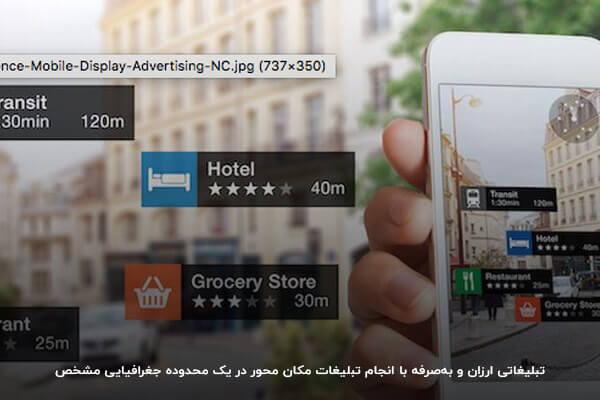
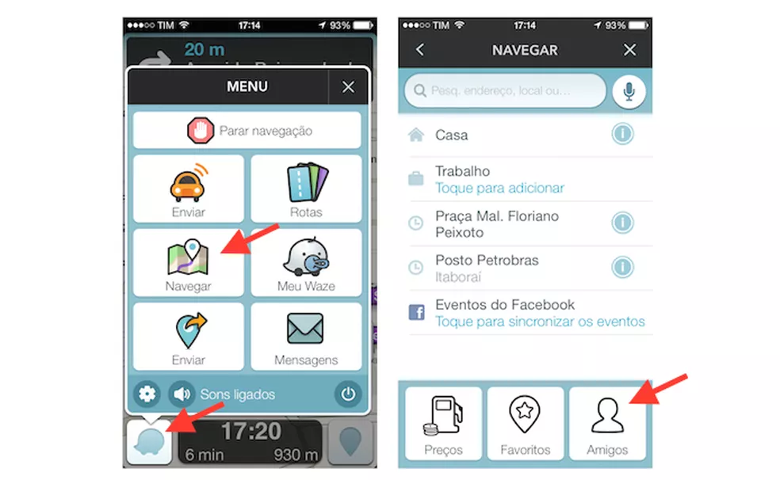
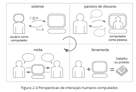
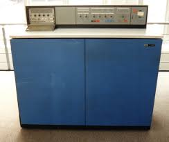
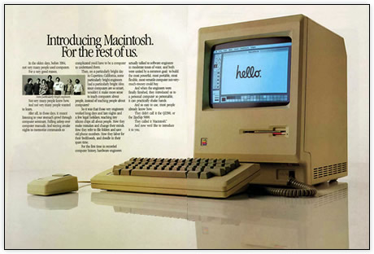

Disciplinas
INTERFACE HUMANO-COMPUTADOR-T01-2024-2 Concluído
Materiais
Vídeo 1 - Interfaces Humano-Computador - Aula 01 - Conceitos Fundamentais sendprof.ª ministrante: Lucia Vilela Leite Filgueiras
Conteúdo
Conceitos fundamentais de IHC (Interação Humano Computador)
O que é interface?
Interface é o que há no limite entre duas fases de um sistema heterogêneo
A IU-interface de usuário - é o suporte computacional pelo qual o usuário aciona as funções do sistema e dele recebe informações necessárias para suas tarefas
https://farazsms.com/wp-content/uploads/2021/09/image004-1.jpg A interface tem elementos de hardware e software
- Hardware:
- dispositivos de interação
- Software:
- programas responsáveis pela apresentação da informação, pelo acionamento dos dispositivos de interação e pela dinâmica
https://encrypted-tbn2.gstatic.com/images?q=tbn:ANd9GcQ1TCj33gw3fqxBNzbN8pGws0141-lM1uF2qbjebq8Hr_UFs6DY
O que é interação?
A interação é o diálogo, um ato de comunicação.
A interação entre humanos e computador é uma linguagem artificial.
https://encrypted-tbn1.gstatic.com/images?q=tbn:ANd9GcTYDumwtA-CXr3R6vmRw2KHzWm3TqdLiOhPmuWqqf3ivYtDA6wR
A interação humano-computador
- Por ser linguagem possui elementos:
- Léxicos
- Sintáticos
- Semânticos
Exemplo: Waze
https://s2-techtudo.glbimg.com/x4JF2RJEdP9kIzA5_zDtC9If3MA=/0x0:695x428/984x0/smart/filters:strip_icc()/i.s3.glbimg.com/v1/AUTH_08fbf48bc0524877943fe86e43087e7a/internal_photos/bs/2021/B/P/IIzYHkR8CxdVzGQrpIAw/2015-01-12-passo-16.png
A interação humano-computador.
Por ser artificial, depende de design.
Entende-se design como um processo de projeto que visa criar as formas e funções dos objetos, produtos e serviços de uso, de forma a torná-los adequados às necessidades de seus usuários e/ou aos efeitos desejados sobre esses.
Perspectivas de interação
Perspectivas de interação.
https://encrypted-tbn3.gstatic.com/images?q=tbn:ANd9GcRIVdh4-9jkGh3ApMo86iAjxm3e6RlYMLtL1X97QulAKwqmyVRE
Affordance.
- Affordance: na área de IHC, significa uma característica do objeto capaz de revelar aos usuários o que se pode fazer com ele.
https://media.licdn.com/dms/image/v2/C5612AQFVllQEamOZfA/article-cover_image-shrink_600_2000/article-cover_image-shrink_600_2000/0/1520144819380?e=2147483647&v=beta&t=98srDwee1d5r4HtrTkXsPYCdtElY6pIWIMgzeFoqTuw
Qualidade da interação.
Qualidade é difícil de definir, mas fácil de identificar
https://img.elo7.com.br/product/600x380/405DD63/centro-de-mesa-em-croche-toalhinha.jpg
- Definição de qualidade
- ISO 8402 define qualidade como a "totalidade de características de uma entidade, que lhe confere a capacidade de satisfazer as necessidades explícitas e implícitas".
- É um conceito relativo e dinâmico
Décadas de 40-50: a qualidade para o usuário é associada à adequação funcional e à disponibilidade
https://encrypted-tbn0.gstatic.com/images?q=tbn:ANd9GcRlWHQEDjIXVoChjmsLZv31vNEApc_g38oq96BQOnd-Rwq_9Ctv
Década de 60: com mainframes, a qualidade é associada à utilidade e ao desempenho
https://encrypted-tbn2.gstatic.com/images?q=tbn:ANd9GcRieFylnio_QSoMtQRu0z_eH-2xKK9hm1ndMvW3R6EabIGRUfGB
Década de 70: A qualidade da interação é associada, pelo usuário, à inteligibilidade, operabilidade e à confiabilidade da operação
https://upload.wikimedia.org/wikipedia/commons/d/db/DC8_cockpit_NASA.jpg
Década de 80: personal computing e interfaces gráficas
- Usuários:
- Programador Usuário programador
- "Officers"
- Educadores e estudantes
- Usuários corporativos
- Usuários domésticos
Na década de 80, o conceito de usuário muda com o surgimento dos computadores pessoais.
A qualidade da interação para usuários passa a ser usabilidade: eficácia, eficiência e satisfação (ISO9241-11)
https://macmagazine.com.br/wp-content/uploads/2006/11/06-mac1984ad.jpg
No início da década de 90, Nielsen define componentes da usabilidade e um método para incorporá-los no design: a engenharia de usabilidade
- Facilidade de aprendizado (learnability)
- Eficiência (efficiency)
- Facilidade de memorizar (memorability)
- Baixa taxa de erros (errors)
- Satisfação subjetiva (subjective satisfaction)
https://i1.sndcdn.com/artworks-juGOWDG4q3oZvG5P-mLJFQw-t500x500.jpg
Final da década de 90: Web impulsiona usabilidade
- Mediação entre usuários "alimentadores" e usuários "consumidores" de informação
- A Web é para todos
- Qualidade é comunicabilidade, navegabilidade e findability
Os anos 2000 são das redes sociais e dos dispositivos móveis.
As qualidades da interação estão associadas à portabilidade, responsividade, acessibilidade, sensibilidade a contexto e jogabilidade
https://upload.wikimedia.org/wikipedia/commons/thumb/b/b9/Steve_Jobs_Headshot_2010-CROP.jpg/612px-Steve_Jobs_Headshot_2010-CROP.jpg
Década de 2k10: a qualidade da interação é multidimensional
https://media.gazetadopovo.com.br/2014/08/c6bebd195f4dfd438bf6e16bcb23bd0b-gpLarge.jpg
Nova norma em 2011: ISO 25010
- Qualidade em uso
- Eficácia (effectiveness)
- Eficiência (efficiency)
- Satisfação (satisfaction)
- Utilidade (usefulness)
- Confiança (trust)
- Prazer (pleasure)
- Conforto (comfort)
- Isenção de risco (Freedom from risk)
- Cobertura de contexto (Context coverage)
- Usabilidade como qualidade do produto:
- Capacidade de reconhecimento da adequação (appropriateness recognizability)
- Facilidade de aprendizado (learnability)
- Operabilidade (operability)
- Proteção contra erro do usuário (user error protection)
- Estética da interface de usuário (user interface aesthetics)
- Acessibilidade (accessibility)
UX: User eXperience.
Experiência de usuário (UX, User eXperience) é um termo usado para referir à qualidade da interação de pessoas com produtos (em geral, de tecnologia) e outras pessoas e às consequências emocionais e cognitivas que decorrem desta interação
https://encrypted-tbn2.gstatic.com/images?q=tbn:ANd9GcTtYHDAtpQwZlAp8YmnCK64OwjVP6GkXIUitxjXk3KCfWxTRe21
Dimensões de Hassenzahl para UX:
Pessoas percebem sistemas interativos em duas dimensões:
- Pragmática
- metas do fazer
- Fazer uma ligação, achar um livro na loja, cadastrar um usuário
- Hedônica
- metas do ser
- Ser competente, ser relacionado aos outros, ser especial
- Pontos de contato
- Marketing
- Loja
- Manual
- Instalação
- Interface de uso
- Suporte
- Descarte
- Momentos
- Antecipação do uso
- Primeiro uso
- Uso esporádico
- Uso continuado
Você consegue distinguir usabilidade de UX?
Usabilidade- É uma característica intrínseca do produto é uma qualidade que o designer especificou e embutiu no produto durante o projeto, considerando o que ele sabe sobre os usuários, para lhes proporcionar uma boa experiência.
- Está relacionada com a perspectiva individual, que é afetada pela usabilidade, mas que também se produz em função de expectativas, vivências anteriores, condições individuais e interações com outros produtos e indivíduos.